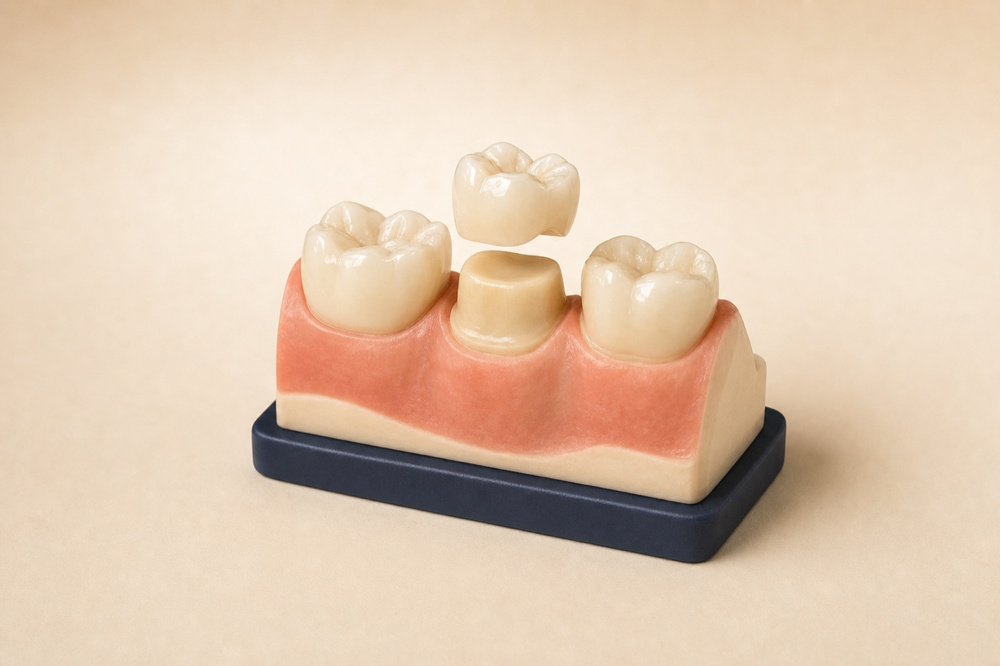

Diagnose
Confirm the tooth can be restored and discuss alternatives.
Dental crowns in Renton, WA
A dental crown covers and reinforces a tooth when a filling alone may not provide enough support. The design is tailored to the tooth, bite, gumline, and visible smile.

Your treatment path
The exact number of visits depends on the material and clinical situation.
Confirm the tooth can be restored and discuss alternatives.
Remove compromised structure and shape the tooth for coverage.
Capture the tooth and bite for a custom restoration.
Check fit, contacts, bite, and appearance before final placement.
A crown cannot guarantee that a tooth will never fracture or need root canal treatment. Prognosis depends on the starting condition and ongoing care.
When coverage may help
We compare crowns with fillings, onlays, bonding, root canal treatment, and extraction when relevant. The goal is the most conservative predictable option.
Coverage can help hold compromised tooth structure together when the crack is restorable.
Thin remaining walls may need more support than another filling can provide.
Many back teeth need cuspal coverage to reduce fracture risk after treatment.
What we evaluate
Before treatment, we assess whether the tooth has enough sound structure, periodontal support, and a manageable crack or decay pattern.
Dental crown FAQ
A crown may protect a tooth weakened by a large filling, fracture, decay, wear, or root canal treatment, or restore an implant.
Longevity varies with material, remaining tooth structure, bite, habits, decay risk, and maintenance. Crowns can eventually need repair or replacement.
A filling is more conservative when enough healthy tooth remains. A crown may be recommended when the tooth needs broader structural coverage.
Yes. The tooth can decay at the crown margin, so brushing, interdental cleaning, and regular exams remain important.
We can show you what is happening and compare repair options before you decide.